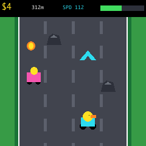

Game 01 · Cheerful kart race
Duck Kart Rally
Steer a little duck to the finish, roll over speed arrows, collect coins and build a sillier, faster kart with every prize.
← Back to games
Controls
| Input | Action |
|---|---|
| L / R | Steer the duck kart |
| L / R | Choose a coin prize |
| A | Take the selected prize |
| + | Start or race again |
| − | Return to menu |
Road fun
- Blue arrows give an automatic speed boost.
- Big rocks slow the kart briefly, then it recovers.
- Friendly rivals wobble past without anyone getting hurt.
- The race always continues to the finish line.
Coin prizes
- Wheels make steering quicker.
- Kart upgrades raise the top speed.
- New Place changes the whole track theme.
- Every coin adds money and opens the prize chooser.